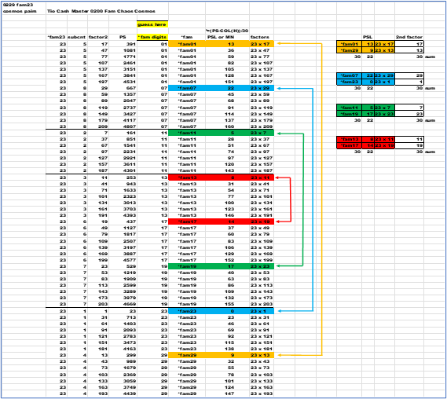
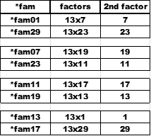

This chapter is the turning point for all the pre-sorting that has been done to get the data prepped for the next sort. Here is the transformation from what appears to no order for prime numbers. Using the formulas and the data there is a regular pattern to prime numbers. This is the pinnacle of all the sorts.
There will be three charts for each *fam. As an example , the names of each sheet in the XLSX will only change by the *fam number.
The *fam01 names follow:
The "a" sheet is taken from the factors chapter. The order of the factors is very important. Small factor first , times symbol , and then the larger factor second. Treat the factors as string data.
The "b" sheet is the same as the "a" sheet , but the data is pasted as values. No formulas. The *fam list is in no order , the same for the PSL. The factors look to grow in a reasonable fashion.
Finally , the "c" sheet is sorted by *fam first , then by the PSL. This unique sort brings all the prime and non-primes into full order. Cosmos. Next , the factors have become distinguished and there is more order within each *fam. Abracadabra , absolute magic !
This is the complete order based on this sort. The secret of primes and non-primes is showing itself. Let's dissect what the data is shows. This last sort has left enormous telltale signs.
First , all *fam01 are sorted together. Next the PSL or MN are sorted in sequential order and grow by value of one (1). This leaves by default the second factors growing larger , each second factor grows by thirty. Remember , the *fam is assigned by one of eight unique formulas.
The second group for *fam01 are the numbers affiliated with *fam07 solutions. The middle column is the PSL or NM. The far-right column is the second factor growing by thirty.
There is order here.
The starting numbers in each group have a relation to thirty. The sum of name *fam and the 2nd factors thirty . The *fam creates *pairs to make thirty.
Let's move forward and look at the next *fam. Next is *fam07 , there will be the same three a , b , c sheets for this family.
The sheet a the calculation formulas , b =3D chaos (the pasted data) , and c =3D cosmos (the sorted data).
First , all *fam01 are sorted together. Next the PSL or MN are sorted in sequential order and grow by value of seven (7). This leaves by default the second factors growing larger , each second factor grows by thirty again. Remember , the *fam is assigned by one of eight unique formulas. The significance is the prior *fam01 the data grew by one.
The second group for *fam07 are the numbers affiliated with *fam07 solutions. The middle column is the PSL or NM. The far-right column is the second factor growing by thirty. Just like the prior image the middle column grows by seven (7).

Important point is to notice the starting number of the PSL in the grouped *fam. Here inside *fam07 there are pairs. This will lead us to *pairs later. Note the balance in the table to make thirty.

*fam01 and *fam29 both start with 3. Adds up to 6. *fam07 and *fam23 are 0 and 6. Adds up to 6. *fam11 and *fam19 are 5 and 1. Adds up to 6. As does *fam13 and *fam17 are 4 and 2. Watch the starting number and test your own sum in the follow charts.
Also , the *fam names are paired as are the last two digits of the factor's column. Both will add up to thirty. There is symmetry in the PSL and factors columns.
The starting numbers of each group have a relation to thirty. The sum of the 2nd factors is thirty. As is the *fam name. Note how the second factor pairs are moving. The *pairs are moving around with each *fam and the solutions.
Here is a highlighted markup of *fam23 and its solutions. The starting element of the solutions and the lines are painted to show the joining of *pairs.
The *fam *pairs add up to thirty
The sum of all the PSL is equal.
The second factor sum is thirty , or a multiple of thirty.
Look for these characteristics in all the following charts. There is symmetry everywhere.
Let's move forward and look at the next *fam. Next is *fam11 , there will be the same three a , b , c sheets for this family.
The sheet a = the calculation formulas , b = chaos (the pasted data) , and c = cosmos (the sorted data).
Starting *pairs values.
*fam01 and *fam29 are 4 and 6. Adds up to 10.
*fam07 and *fam23 are 6 and 4. Adds up to 10.
*fam11 and *fam19 are 0 and 10. Adds up to 10.
*fam13 and *fam17 are 8 and 2. Adds up to 10.
The starting numbers of each group have a relation to thirty. The sum of the 2nd factors is thirty. As is the *fam name. Note how the second factor pairs are moving.
Let's move forward and look at the next *fam. Next is *fam13 , there will be the same three a , b , c sheets for this family.
The sheet a = the calculation formulas , b =3D chaos (the pasted data) , and c = cosmos (the sorted data).
Starting *pairs values.
*fam01 and *fam29 are 3 and 9. Adds up to 12.
*fam07 and *fam23 are 8 and 4. Adds up to 12.
*fam11 and *fam19 are 7 and 5. Adds up to 12.
*fam13 and *fam17 are 0 and 12. Adds up to 12.
The starting numbers of each group have a relation to thirty. The sum of the 2nd factors is thirty. As is the *fam name. Note how the second factor pairs are moving.
Let's move forward and look at the next *fam. Next is *fam17 , there will be the same three a , b , c sheets for this family.
The sheet a = the calculation formulas , b = chaos (the pasted data) , and c = cosmos (the sorted data).
Starting *pairs values.
*fam01 and *fam29 are 13 and 3. Adds up to 16.
*fam07 and *fam23 are 6 and 10. Adds up to 16.
*fam11 and *fam19 are 7 and 9. Adds up to 16.
*fam13 and *fam17 are 16 and 0. Adds up to 16.
The starting numbers of each group have a relation to thirty. The sum of the 2nd factors is thirty. As is the *fam name. Note how the second factor pairs are moving.
Let's move forward and look at the next *fam. Next is *fam19 , there will be the same three a , b , c sheets for this family.
The sheet a = the calculation formulas , b = chaos (the pasted data) , and c = cosmos (the sorted data).
Starting *pairs values.
*fam01 and *fam29 are 12 and 6. Adds up to 18.
*fam07 and *fam23 are 8 and 10. Adds up to 18.
*fam11 and *fam19 are 0 and 18. Adds up to 18.
*fam13 and *fam17 are 4 and 14. Adds up to 18.
The starting numbers of each group have a relation to thirty. The sum of the 2nd factors is thirty. As is the *fam name. Note how the second factor pairs are moving.
Let's move forward and look at the next *fam. Next is *fam13 , there will be the same three a , b , c sheets for this family.
The sheet a = the calculation formulas , b = chaos (the pasted data) , and c = cosmos (the sorted data).
Starting *pairs values.
*fam01 and *fam29 are 13 and 9. Adds up to 22.
*fam07 and *fam23 are 22 and 0. Adds up to 22.
*fam11 and *fam19 are 5 and 17. Adds up to 22.
*fam13 and *fam17 are 8 and 14. Adds up to 22.
The starting numbers of each group have a relation to thirty. The sum of the 2nd factors is thirty. As is the *fam name. Note how the second factor pairs are moving.
Finally , the last *fam. Next is *fam29 , there will be the same three a , b , c sheets for this family.
The sheet a = the calculation formulas , b = chaos (the pasted data) , and c = cosmos (the sorted data).
Starting *pairs values.
*fam01 and *fam29 are 28 and 0. Adds up to 28.
*fam07 and *fam23 are 22 and 6. Adds up to 28.
*fam11 and *fam19 are 18 and 10. Adds up to 28.
*fam13 and *fam17 are 16 and 12. Adds up to 28.
The starting numbers of each group have a relation to thirty. The sum of the 2nd factors is thirty. As is the *fam name. Note how the second factor pairs are moving.
There is a lot of symmetry in the data as this prior sort has been put in place. More on this later.